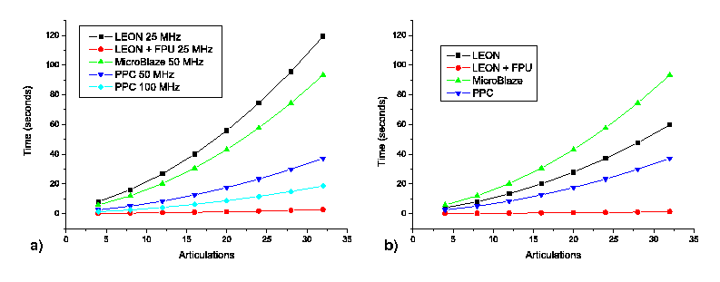

Next: 5 Conclusion and further Up: 4 Results Previous: 1 Synthesis results


Next: 5 Conclusion
and further Up: 4
Results Previous: 1
Synthesis results
|
 |
Figure 3: a) GRT comparison for the four architectures evaluated, as a function of the number of articulations. b) Normalized results supposing a 50MHz system clock frequency for all architectures.
The algorithm has been compiled for the different architectures and it is loaded from external memory and executed. The execution of the algorithm determines the time the robot needs to generate a new kind of movement. This time is called gait recalculation time (GRT). If a worm-like robot capable of having a fast reaction is needed for a particular applications, a low GRT is required.
Figure 3a shows the GRT for the four architectures, as a function of the numbers of articulations. Figure 3b compares the different architectures working at 50MHz. Due to the limitations of the chosen architecture FPGA device, the 50Mhz data for the LEON2 processor has been estimated supposing a half cycle time.
As it was expected, the GRT increases with the number of articulation of the robot. Also, the PowerPC reaches a significantly better result than the other two processors, because it is a hard core with specific hardware functional units.
The most outstanding result is obtained with architecture 2 (LEON + FPU). For an 8 articulations worm-like robot, the performance achieved using the LEON2 with FPU is 40 times better than LEON2 without FPU, using a 6% additional resources. This performance is 6.5 times better than the obtained with the 100Mhz PowerPC implementation.


Next: 5 Conclusion
and further Up: 4
Results Previous: 1
Synthesis results